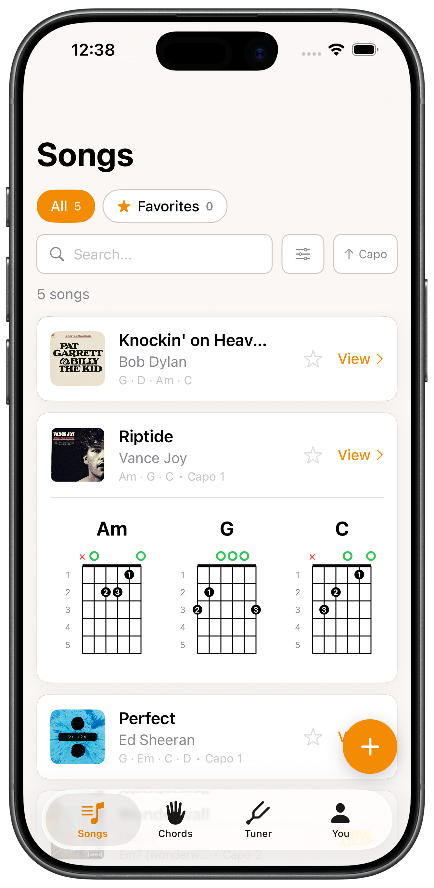
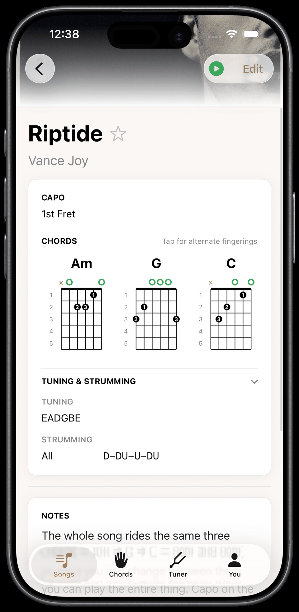
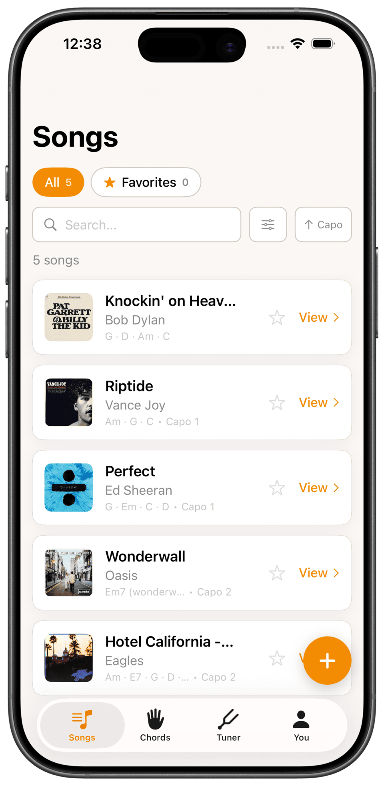

Fret Not is a free iOS app for the songs you’re learning on guitar. Save each one’s chords, strumming, capo, and tuning, so it’s ready the moment you sit down to play.

Not a lessons app. Fret Not is for players who already know a few chords and want to keep the songs they’ve learned. No ads, no clutter.
“A lot of songs I know have weird chords that I don’t even know the name of, or I just copy the person I see on YouTube.”
Save each song with its chords, capo, strumming and tuning, keep your whole songbook in one place, and add new ones in seconds.
It takes two steps. First add the song: search for it, type it in, or share it in from wherever you found it. Then add the chords: type them in by hand for free, or let Fret Not Pro suggest them for you. It picks chords for your skill level, with the capo that keeps even a hard song in easy, open shapes.
Pro is $3.99 a month or $29.99 a year. Everything else in the app stays free. More about Pro

Chord shapes, strumming, capo, tuning, and a note about the bit that always trips you up. Play it straight through Spotify, and keep a link to the YouTube tutorial you learned it from. Open the song later and it’s all still there, instead of hunting the chords down again.
Open the app and your whole songbook is there. Peek at the chords for any song without leaving the list, or play it straight from Spotify and follow along.

Browse the full chord library any time, not just the chords in your songs. Every one comes with a picture of where your fingers go.
Holding a shape you cannot name? Tap it onto the fretboard and Fret Not tells you what it is, then saves it to a song or your own library.
Real-time pitch detection, string by string, with alternate tunings supported. No second app to go and find.
Your songs follow you from iPhone to iPad through your own iCloud, so your songbook is the same on every device.
Fret Not counts every day you play and keeps your streak alive, with a nudge the evening before you would break it. The habit is what carries you past those first months.
Bring a whole playlist in at once and every song lands in your list, so you can fill your songbook in one go instead of one at a time.
“This easy to use app can help for tuning or just keeping track of songs that you mostly know but just need to remember which chords and tuning and capo it might need. Nice to have a simple app that doesn’t require signing up or signing in.”
Save every song you learn, so it’s there the next time you sit down. Be the one in ten who sticks with it. Free on iPhone and iPad.
Download on the App Store